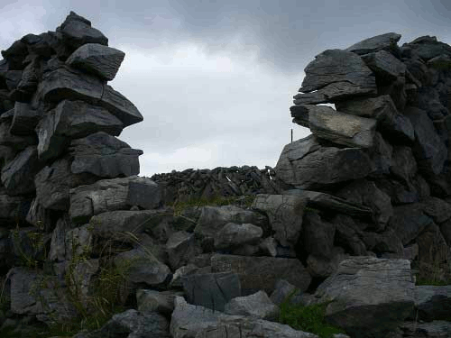
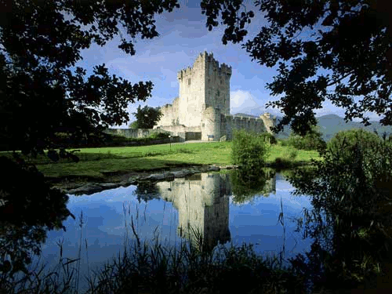

УЛИСС Джеймса Джойса
3. Изумрудный остров в серебряном море
Что есть Ирландия?
Во-1-х, это остров на самом-пресамом западе Европы; западнее его Европы уже нет, а есть лишь немыслимая масса воды, именуемая Атлантическим океаном, который катит свои волны на просторе в 2.000 миль, что разделяют Европу с Америкой.
Длина острова с севера на юг - 302 мили, а ширина - 171 миля, площадь составляет 70.285 км2 (примерно, Армения с Арцахом помноженные на два).
По краям острова—чтоб не утоп в океане—утёсы и скалы от 3 до 20 метров, внутри же расстилается холмисто-волнистая равнина со множеством речек, ручьев, болот и озёр, но попадаются и горы до 1 км высотой.
Зимой температура опускается до промежутка между + 4°С и - 7°С, а летом колеблется между + l4°C и + 16°С; тут не бывает ни затяжных снегопадов, ни бурь, ни засух.
Впрочем, так не всегда было: в незапамятные времена Ирландию, как и многие другие места земного шара, проутюжили два ледниковых периода, а когда лёд стаял, то не всякая живность сумела перебраться на этот окраинный остров и на нём до сих пор нет кротов и змей.
Сами ирландцы полагают, что змей отсюда навеки изгнал Св. Патрик (подробности о нём чуть позже), но на мелких ящерок его запрет не распространился, а мышей на острове всего два сорта, в отличие от соседнего острова Британия, где тех аж 4 вида.
Для лучшего постижения истории населяющих Ирландию людей, не помешает отметить, что, в силу особенностей географического положения (попутные, либо противные ветра, наличие подводных рифов и отмелей), в северную часть острова удобнее добираться из Скандинавии и Шотландии, в восточную – из Уэльса или Англии, в южную из Уэльса и Франции, в юго-западную из Франции и Испании.
Теперь уже трудно установить по какому из четырех вышеизложеных направлений попали сюда первые люди, но 8 тысяч лет назад на острове жили уже охотники-рыболовы с камеными топорами и скребками из кремня.
3 тысячелетия спустя население мало-помалу освоило огородничество и взяло за моду хоронить своих покойников в насыпных курганах, а те, в свою очередь, украшать долбано-резьблёными камнями (хачкары, но без креста).
Так оно и шло своим чередом и, ещё через два тысячелетия, наступил Бронзовый Век, а от него уже было рукой подать—всего через какие-нибудь пять столетий—до века Железного, о котором имеются уже словесные показания в виде саг (былин) и прочих преданий.
Как жили ирландцы Железного Века?
Да как все прочие люди в других местах и в разное время, но на таком же этапе развития.
Вся одежда состояла из 5 деталей:
- обувь из звериной шкуры (трехнер);
- льняная рубаха до колен;
- пояс (за отсутствием карманов, на него подвешивались самые нужные вещи);
- плащ из овечьей шерсти;
- булавка – застегивать плащ на груди.

Пахали на волах, собирали зерно и сено, держали овец, свиней на убой; охотились на дичь и рыбу; воду брали из колодцев (благо, глубоко копать не надо – озёрно-болотный край, как никак); для развлечения применяли сказки и песни под аккомпанимент на инструменте именуемом лирой; вместо туалетной бумаги пользовались ручьями – мягкий климат позволял делать это круглый год.
И была на острове уйма королевств, где короли избирались путем открытого голосования соплеменников и таковых королей поддерживали лучшие люди племени, то есть, у которых скотины было больше, чем у остальных, одним словом – аристократы.
Однако, саги информируют, что в V веке н. э. должность короля уже повелось передавать по наследству, как это делали потомки короля по кличке Нейл с 9-ю Заложниками.
Нормальное течение жизни обеспечивали не только доблесные короли, но и привычные законы.
Интересно выглядело древне-ирландское законодательство для расторжения брака.
Во-1-х, если супруги прожили в совместном браке хоть на один день долее 7 лет, то никакой суд им развода не давал; мол, коли смогли уж столько вытерпеть, то и дальше протянете – и неча теперь носом крутить.
А при разводе пар с меньшим стажем раздел совместно нажитого имущества проводила жена, раскладывая всё на две кучи, как ей вздумается, затем к этим произвольным кучам подводили мужа и тот говорил, которую из двух он берёт себе.
С III века н. э. ирландцы попали в историю – римские писатели начинают упоминать об их грабительских набегах на Британию – самую западную провинцию Римской Империи.
Разбойников этих писатели именовали племенами "скоти", вот почему, когда уже в IX веке ирланские племена одолели племена пиктов на севере острова Британия, завоеванная ими территория получила название "Скотланд" – Шотландия.
Чтобы не запутаться во всех генеалогических хитросплетениях племенных деревьев, давайте уговоримся ирландских ирландцев называть гаело-ирландцами, как они сами любят себя называть.
Разбойные нападения на римские владения, а порой и просто даже торговля с ними, не сходили даром с рук – гаело-ирландцы заразились христианством.
Уже в 431 г. епископ провинции Галлия прислал некоего Палладиуса в помощь "скотям, которые в Бога веруют" (Britannica 21:1006), но главным обратителем острова в христианство стал Св. Патрик, которого ирландцы-набежники захватили на одной из римских вилл в Британии.
Потом он был освобожден, подучился и с 432 г. приступил к обращению гаело-ирландцев в истиную веру, чем успешно и занимался до 492 г., а с той поры и поныне считается святым "покровителем острова".
В VI-VII веках на острове возникли и окрепли монастыри, которые начали вести летописи на латинском и родном, гаельском языках. Из тех же монастырей исходили набеги, но уже не разбойные, а духовные, на Шотландию и Германию – именно ирландские монахи обратили языческие племена германцев в христианство, со всеми вытекающими грандиозными последствиями.
В 795 г. (VIII век) на берега Ирландии впервые высадились варяги-викинги – бандюги из Норвегии, набеги этих морских разбойников повторялись неоднократно и в 838 г. (IX век) они захватили город Дублин, где укрепились и продолжили свое завоевание разных прочих частей острова.
Король Аэд Финлиат в 862-879 г. г. изгнал их из сердцевины острова, но города Дублин и Лимерик (захваченый ими в 920 г. ( X век)) оставались в руках викингов, которые постепенно превращались в купцов-мореходов, готовых, правда, и попиратствовать, когда случай подвернётся.
В 968 г. они потеряли Лимерик, а в 1014 г. (XI век) Верховный Король Брайан Вару разбил их в битве при Клонтарфе.
Брайан был первым из королей, власть которого распространилась на всю уйму гаело-ирландских королевств.
Случись такое объединение до вторжения викингов, то, возможно, несколько первых побед отдали бы весь остров в руки завоевателей ещё в IX веке, как это произошло на севере Франции, где они обосновали нормандское королевство на месте предыдущего.
В Ирландии же, после клонтарфской битвы, варяги хоть и продолжали верховодить в морской торговле, но на суше всё больше подчинялись местным королям.
В 1166 г. (XII век) Верховный Король Рори О'Конор прогнал Дермонта Макмюрова, короля лейнстерского (одного из бывшей уймы королевств), тот перебрался в Англию, уже сто лет как завоеванную норманами, и там, вместе с Ричардом де Клэром, эрлом Пемброка по кличке "Крепкий Лук"; навербовал англо-норманских авантюристов.
Общими усилиями они отхватили солидный кусок территории на востоке Ирландии. В октябре 1171 г. на захваченый плацдарм высадился Генри II, непосредственый король де Клэра, и в 1175 г., досыта навоевавшись, король О'Конор признал себя подчинённым Генри II-го.
.png)
Король английский Джон в 1210 г. (XIII век) посетил остров и установил тут гражданское правление, чтобы жили по английским законам, а бароны и лорды не творили бы что вздумается.
В 1300 г. (XIV век) на острове заведен был парламент, но лишь для англо-ирландцев (потомков авантюристов-завоевателей), а бывшие королевские рода О'Нейлов, О'Коноров и Маккарти в парламенте представлены не были, да не очень-то и набивались.
В 1318 г. английский король вызвал к себе своего подчинённого – короля ирландского, а в Ирландии прошел слух, будто ихнего короля в Англии да порешили, и сын его, Эд Брюс, поднял восстание, но был разбит в битве у Дандалка и, разумеется, казнён.
Английский король разделил завоеванную часть Ирландии на 3 эрлства:
- Килдар – куда назначил эрлами Фицджеральдов Лейнстерских,
- Дезмонд – под контроль Фицджеральдов Мунстерских, и
- Ормонд – тут эрлами стали Бутлеры.
Все эти эрлы были из новой, англо-ирландской разновидности, ведь авантюрные нормано-англы брали жён из местного населения, а те своих детей обучали и воспитывали на родном языке и потому у нормано-англо-ирландцев возродился гаелский язык и обычаи.
В 1366 г. английский парламент установил запрет на смешанные браки; все ещё не завоеванные окраины острова были объявлены незаконно удерживаемыми, но чтоб их отнять у короны не хватало сил.
Более того: непокорённым ирландским забиякам регулярно выплачивали дань – лишь бы только не нападали на завоёванную часть Ирландии.
Почти весь XV век фактическими правителями острова оставались килдарские Фицджеральды. По титулу они были всего лишь замами английской короны, но власть Англии была тут чисто фиктивной и только в 1494 г. эрлов Килдара, за поддержку английским самозванцам, отпихнули от руля, и был прислан чистопородный англичанин – Эд Пойнингс, который усмирил Килдар, но одолеть северную часть острова не смог.
В XVI веке титул лорда-депутата (зама королевской власти) опять вернулся к эрлам Килдара и передавался по наследству, покуда король Генри VII, поддавшись на козни и интриги 10-го эрла Дезмонда, взял да и вызвал для отчета 9-го эрла Килдара.
И тут сын вызванного эрла, Томас Фицджеральд, по кличке Шёлковый Том, поднял восстание 1537 г., в котором и полёг.
Власть перешла в руки Бутлеров, потому что они поддерживали короля, когда тот поскандалил с папой римским, ведь на тот момент шла Реформация – обще-европейская разборка на почве веры в Бога.
В 1541 г. местный парламент признал Генри VIII королём Ирландии, последовала конфискация владений католических монастырей и непокорной части аристократии, что толкнуло англо-ирландцев в объятия гаело-ирландцев и они тоже остались католиками.
В XVI веке неугомонные ирландцы трижды подымали крупные восстания:
- в 1559 г. под предводительством Шейна О'Нейла (гаело-королевская фамилия), которое было разбито стараниями О'Донела (еще один гаело-королевский род);
- в 1568-83 г. г. востание Дезмона (англо-ирландец) с участием добровольцев-наёмников из католических Испании и Италии; и
- в 1594-1603 г. г. восстание О'Донела (опомнился!).
Исход был одинаков – разгром, конфискация земель и передача их приезжим из Англии плантаторам, которые с землёй обращались хищнически (лишь бы успеть урвать прибыль до следущего восстания), расходы короны на поддержание порядка росли, вражда между религиями углублялась.
Продолженная в XVII веке политика конфискаций и плантаций приводила к оттоку ирландских вояк и священослужителей в европейские страны. На родине таких эмигрантов прозвали "дикими гусями" и в различных европейских странах они нередко занимали высокие военные и политические посты.
На первых порах короне, вроде, полегчало – бунтарей под боком меньше стало, но зато в Европе из-за этих эмигрантов, и их стараниями, сложилось своеобразное ирландское лобби, ирландский вопрос стал игральной картой международной политики.
Теперь, если Англия чего-то хотела от европейских стран, а тем такое её хотение было не в жилу, то враз выставляли условием, чтоб не притесняли бы католиков в Ирландии.
С плантациями придумали похитрее: на них теперь приезжали не только плантаторы, но и специально навербованная рабочая сила, особенно из низинной Шотландии (гаело-пикто-англы), которые завезли с собой свою разновидность протестантской веры – пресвитерианство. Основным районом расселения шотландских иммигрантов на острове стала его северная часть – Ольстер.
В 1641 г. Чарльз I подавил восстание в Ольстере, где восставшие перебили было тысячи колонистов.
В 1652 г., победоносно завершив гражданскую войну в Англии, Оливер Кромвель подавил в Ирландии тех, кто по ходу войны придерживался неверной ориентации, а тех, кто был за него, и своих вояк наделил землями побеждённых.
В 1665 г. в Англии отреставрировали власть королей; у кромвелевцев в Ирландии отобрали 1/3 владений и вернули прежним владельцам, оставив недовольными и тех и других. А тут ещё произошёл раскол протестантизма на англиканскую и пресвитерианскую церкви.
По закону 1704 г. (это уже XVIII столетие) членом парламента мог стать лишь протестант (а в Ирландии они составляли всего 10% населения) и вообще только тот, кто причащался по англиканскому церковному обряду, имел шанс получить какую-либо официальную должность.
Но теперь утечка ирландцев шла не только в Европу. Ирландия уже перестала быть периферийным закоулком – после открытия Америки она оказалась срединной точкой между Старым и Новым Светом, через Ирландию пролёг один из основных маршрутов в западное полушарие. "Дикие гуси" начали улетать в западном направлении, особенно из ольстерских пресвитерианцев.
Грянула Американская революция 1775 г., части расквартированных на острове британских войск начали перебрасывать за океан, местные ирландцы подняли головы и в 1782 г. добились отмены утеснений католикам (сняли запрет на приём их в университеты, например), а с 1793 г., когда Англия трепетала уже пред вторжением со стороны революционной Франции, католики получили доступ к официальным должностям.
В Ирландии, по французскому примеру, возникают клубы ОБЪЕДИНЕННЫХ ИРЛАНДЦЕВ, для католиков и пресвитерианцев, которые затем перешли в подполье.
В 1801 г. (XIX век) было создано Объединенное Королевство Великобритании с одним общим парламентом на всех, в котором ирландцам доставалась 1/5 мест в нижней палате.
В 1803 г. в Ирландии, без сучка и задоринки (дело-то привычное), подавили восстание клубников Объединенных Ирландцев. Ирландские католики и протестанты обвиняли друг друга в неудаче восстания и, когда в 1828 г. произошла полная эмансипация (восстановление прав) католиков, пресвитерианцы примкнули к англиканцам, выступая за объединенность с Британией, чем и заслужили прозвище "юнионисты" ("юнион" – объединение) и презрительную ненависть католиков.
Вождь противников Объединения, О'Конел, избрал за путь борьбы массовую агитацию и демонстрации (тогда в моде было собирать подписи); в разных местах острова собирались многотысячные митинги.
В октябре 1843 г. английские войска, применив артилерию, расстреляли один из таких митингов и данный путь агитации и борьбы – увял.
Пять лет спустя было проведено очередное неудачное восстание и начался Великий Голод, потому что картошка – в то время основной продукт питания на острове – сгнила на корню из-за болезни, и один миллион человек померли, а ещё больше эмигрировали; но некоторые, чтобы не умереть, перешли в протестанство, потому как английское правительство протестантов подкармливало.
В последовавшее после Великого Голода двадцатилетие ирландцы безостановочно уезжали в Америку и в Соединенных Штатах создали организацию ФИАННА – так у древних гаело-ирландцев называлась королевская дружина.
За пропаганду анти-британских идей фениев на их изначальной родине группа издателей и сотрудников издаваемой в Ирландии газеты ИРЛАНДСКИЙ НАРОД—Кикхэм, О'Лири, О'Донаван Росса—в 1865 г. были приговорены к длительным срокам тюремного заключения.
Два года спустя очередное восстание, на деньги собранные американскими ирландцами, завершилось, как обычно, его подавлением.
В 1870 г. в тюрьме английского города Манчестер были повешены ирландские подпольщики Аллен, Ларкин и О'Брайан, за неудачную попытку освободить из тюрьмы сотрудников газеты ИРЛАНДСКИЙ НАРОД.
В глазах английского общественного мнения они были отпетыми матерыми преступниками, потому что по ходу своей операции застрелили сержанта полиции—отличного работника и прекрасного семьянина—для ирландцев же эти боевики стали героями, о которых слагались легенды и песни.
В конце 70-х того же, XIX века юрист Исаак Батт начал раздувать движение за самоуправление Ирландии.
Неурожай 1879 г. напугал массы и подстегнул их активность, снова начались митинги. Исаак не слишком-то был популярен и его сменил молодой и рьяный Парнел – великолепный оратор и любимый ирландцами вождь, но он полюбил чужую жену и своя с ним за это разошлась, отчего репутация его подмокла и он скоропостижно скончался от простуды.
Митинги опять выдохлись – начались парламентские методы борьбы за автономию: ирландская партия в британском парламенте шла на всевозможные комбинации, компроментации, компромисы, размежевания, фракции и прочие уловки политической тусовки, но палата лордов на протяжении 20 лет непоколебимо похеривала Билль о Самоуправлении.
Энтузиазм ирландских масс отхлынул из политики в культурно-националистическое движение Гаельская Лига, которое боролось за возрождение исконно ирландского языка, а также в Гаельскую Атлетическую Ассоциацию.
Из этих двух организаций вербовались члены для тайного Ирландского Республиканского Братства, созданого Редмондом в 1906 г. (XX век).
В 1912 г. в общебританском парламенте прошёл, наконец-то, Закон о Самоуправлении, но ирландские юнионисты устроили кампанию сбора подписей против этого закона и на севере острова, где большинство населения составляли протестанты, они начали создавать силы самообороны от остальной, самоуправной Ирландии – силы эти назывались отрядами Ольстерских Добровольцев.
В ответ самоуправники-республиканцы начали в 1913 г. собирать отряды Ирландских Добровольцев и гражданская война на острове не успела разразиться толко потому, что её опередила и грянула первая мировая война – 1914 г.
Ирландское Республиканское Братство занялось подготовкой очередного восстания, разжились оружием в Германии, но немцы им подсунули устарелое и списанное оружие.
Тем не менее, 24 апреля 1916 г. в честь 10-летнего юбилея этой тайной организации 1, 000 подпольщиков затеяли вести уличные бои, но через неделю угасли. Редмонд, руководитель Братства, был казнён.
На выборах 1918 г. победу одержала республиканская партия во главе с Эмоном де Валера, недобитым повстанцем Братства. Создается Ирландская Республиканская Армия (ИРА), которая устраивает засады на британские войска, в ответ на что проводятся жестокие репрессии, а ирландские полицейские, не желая принимать в них участие, в массовом порядке уходят в отставку.
Лондонское правительство присылает спешно навербованых английских полицейских, которые зверствуют вовсю, но всё равно, в 26 из 32 графств острова британское правление рухнуло, за исключением северных районов вокруг Ольстера.
В 1920 г. под нажимом США (читай: тамошнего ирландского лобби) Ирландию разделяют на Северную и Южную, с предоставлением частичного самоуправления, а для этого полагается иметь уже собственный парламент.
Билль 1912 г., спустя восемь лет, вошёл-таки в силу. По англо-ирландскому договору 1921 г. Южная Ирландия (26 из 32) стала именоваться Ирландским Свободным Государством (ИСГ) и получила статус доминиона Объединенного Королевства Великобритании (ОКВ), каковой имели Канада, Австралия, Южная Африка и проч., и проч. Но правителям всех этих государств-доминионов полагается давать присягу верности ОКБ.
Республиканец де Валера подал, естественно, в отставку. К власти пришли доминионцы Грифит и Коллинз.
Жарким выдалось лето следушего - 1922 г.
Двадцать второго июня в Лондоне был убит фельдмаршал Вильсон, давший перед этим согласие поехать в Северную Ирландию как военспец. В столице ИСГ ирландцы-республиканцы захватили здание Четырех Судов и неделю отбивались от ирландцев-доминионцев, потом здание было взорвано и лидер дублинских республиканцев, О'Конор, сдался.
Но лидеры доминионцев недолго радовались: один из них скончался 12 августа от сердечного приступа, а второй 22 августа поехал на юг острова, понаблюдать за ходом военной операции против тамошних республиканцев, и угодил в засаду, где его тщательно изрешетили.
Правительство ИСГ возглавил Косгрейв и ввел крутые меры—казнь за одно только хранение оружия–77 республиканцев попали под эту статью.
В мае 1923 г. республиканцев подавили и в августе были проведены выборы. Бойкот выборов сторонниками де Валеры отдал власть Косгрейву, и он вполне рационально ею воспользовался: были созданы хорошие условия для развития фермерства в сельском хозяйстве, успешно проведена электрификация страны путем сооружения электростанций на реках, централизована государственная власть, что сократило мздоимство хапуг на местах, причём шанс к продвижению на госслужбе имели лишь чиновники владеющие гаело-ирландским языком.
В 1932 г. премьер-министром стал де Валера, он аннулировал присягу верности Великобритании и отчисление ей особого налога. В 1937 г. принята новая конституция, по которой страна называлась уже просто Ирландией.
Во второй мировой войне Ирландия сохраняла нейтралитет. Несмотря на бомбёжку Дублина немецкой авиацией и на нажим президента США Теодора Рузвельта, Ирландия так и не объявила, даже фиктивной, войны Германии (мы же их обращали в христианство!).
В 1949 г. Ирландия начала именоваться Республикой Ирландия; Британия её признала, но уйти из Северной Ирландии отказалась, пока не будет на то согласия парламента Северой Ирландии.
В 1950-60 г. г. ИРА нападала на посты британской армии вдоль границы Ольстера. После англо-ирландского договора 1985 г. пограничников уже не трогали, но английские патрули внутри Северной Ирландии ещё долго нарывались на засады, и там же продолжается террористическая война между протестантами и католиками Ольстера.
С 1987 г. Ирландия стала членом Европейского Сообщества, уровень жизни там не хуже, чем в прочих странах этого Сообщества.
Разговаривают в Ирландии на двух равноправных языках – гаельском и английском. В армию призыва нет, а желающие могут наниматься по контракту. Вопрос Северной Ирландии пока не решён.
(Писано в 1995-м году.)
Такая вот вышла история у этого Изумрудного Острова (как любят именовать его ирландские поэты).
Вполне обыкновенная, для народа, история – много крови, много грязи, обманутых надежд и разочарований, но были и проблески, оттепели были.
А народы, они как люди – всяк: со своим характером. Кто-то, недвижно усевшись перед своим шатром, терпеливо дожидается, когда мимо пронесут гроб с его обидчиком. Другой, расхрыставшись, прёт буром на рожон, хоть ему не раз и вдалбливали, что против лома нет приёма.
Но разницы, пожалуй, нет – какими средствами достигается цель: время расставит всё по местам, потомки рассудят. Высмеют ослиное упрямство проигравших, победителей превознесут за героическое упорство.
Ну, а теперь—от общих мест и размашистых исторических панорам—обратимтесь-ка к истории одной отдельно взятой личности, к истории человека воплотившего в своём творчестве дух, а в своей жизни трагизм и непобедимое упорство ирландского народа.